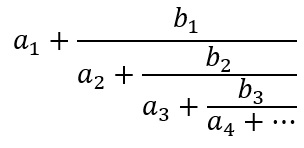
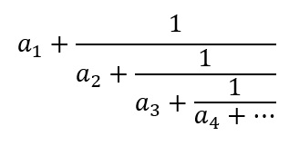

Método general
Sea una fracción continua una expresión de la forma:

Donde los ai y bi son números reales o complejos. Se cumple que si todo bi igual a 1, y todo ai es un entero con i ≥ 2 son enteros positivos, se dice que pertenece a una fracción continua simple y por ende tiene la forma:

donde los ai son enteros > 0 para i ≥ 2.
Los números ai en una fracción continua simple se les denomina como términos de la fracción. Si el número de términos de una fracción continua simple es finito, decimos que la fracción es una fracción continua simple finita y claramente representa un número racional.
Si el número de términos es infinito, decimos que la fracción es una fracción continua simple infinita y en este caso, hay que precisar su significado matemático.